Вчера вечером вернулся из Борисоглебска в Москву. Почти 20 дней не смотрел телевизор, не выходил в Интернет, не имел никаких других занятий, кроме скитания с младшей внучкой по окрестным рекам и прудам, рыбной ловли и "наблюдений натуралиста". Конечно же главной целью всех этих путешествий был Хопер в окрестностях города Борисоглебска.
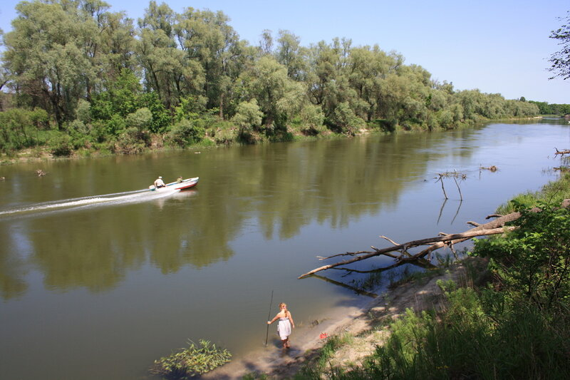
Река Хопер ниже слияния с р. Вороной к юго-западу от Борисоглебска
Здесь Соня поймала своего первого подлещика:
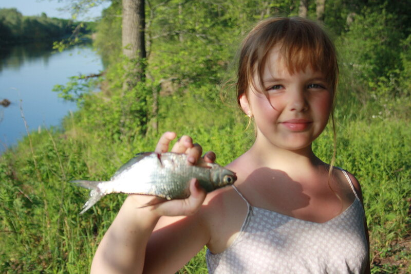
А немного выше слияния - Хопер другой, не такой державный. Но не менее интересный.
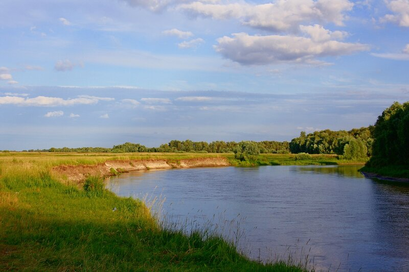
И здесь много рыбы. На червя попадаются большие окуни:
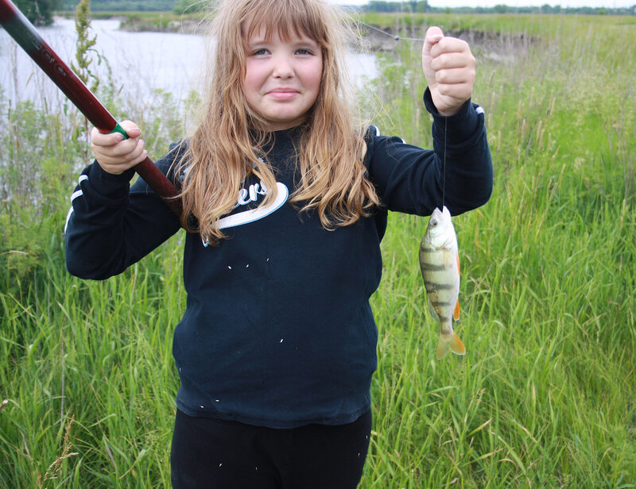
А на вечерней зорьке на живца можно поймать язька:
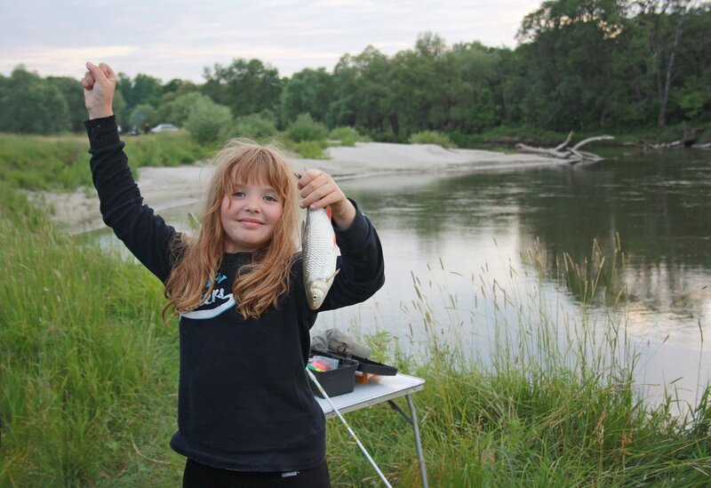
Среди разнотравья даже простые щи из термоса кажутся сказочно вкусными
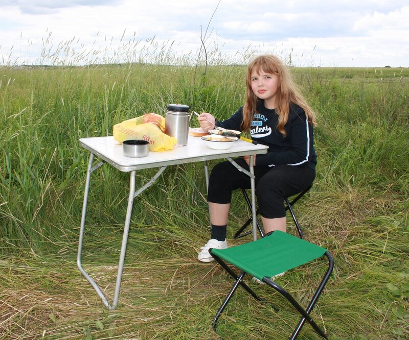
Если конечно фотограф не увлекается и не заставляет себя так долго ждать:
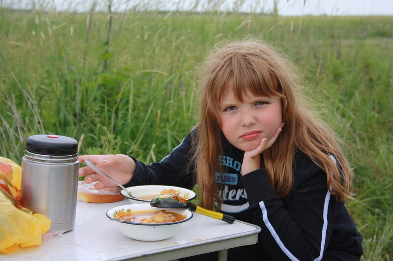
Освоили заброс донки
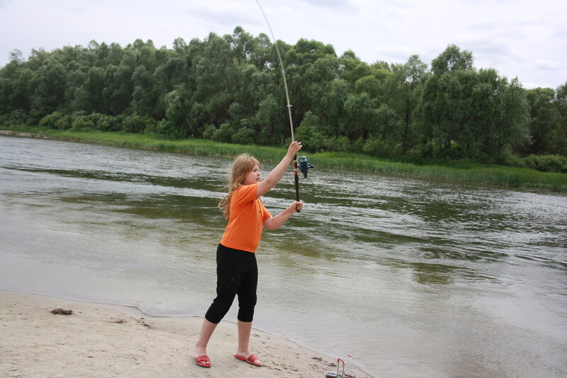
И приучились терпеливо ждать поклевки
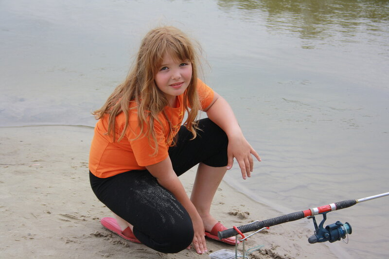
Освоили древние приметы моряков и рыбаков. В частности, если солнце красно с вечера - моряку бояться нечего:
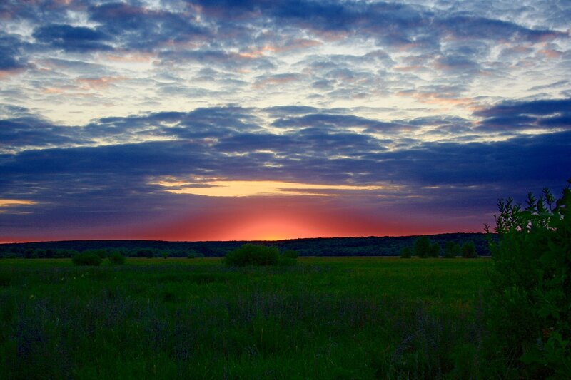
В окрестных прудах ловили карасей
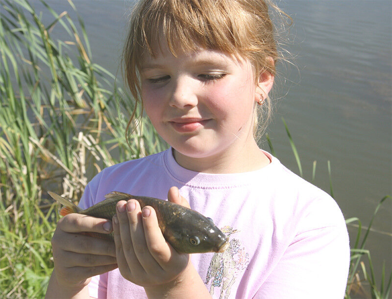
и карпов Съездили к друзьям, которые отдыхают в деревне Большие Алабухи неподалеку от Борисоглебска.
Там пообщались с цыплятами
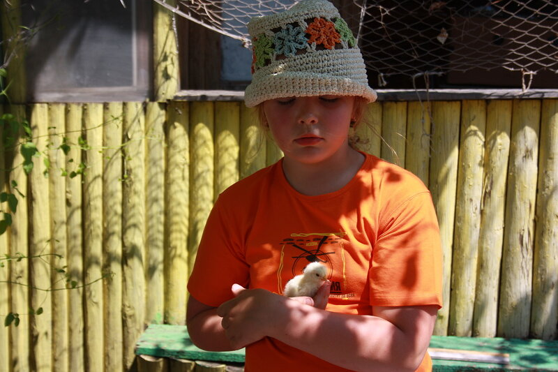
и котятами
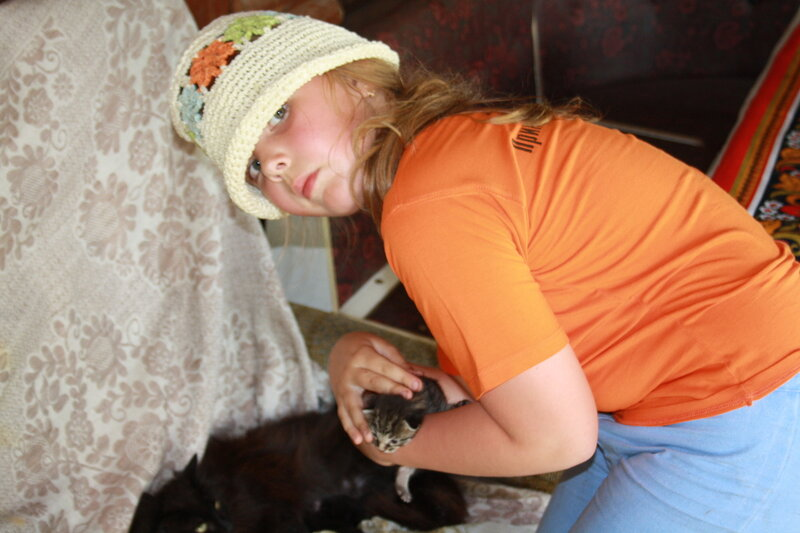
Обсудили ход строительства модели брига "Меркурий"
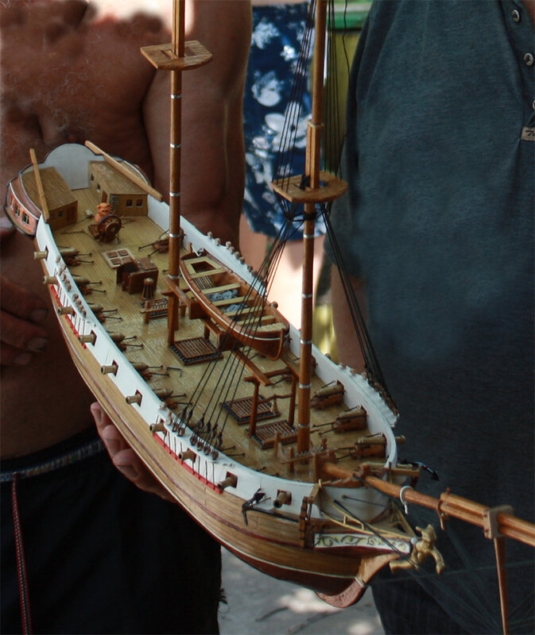
На обратном пути в Москву как обычно остановились на полпути у храма Боголюбской иконы Божией матери в Зимарово
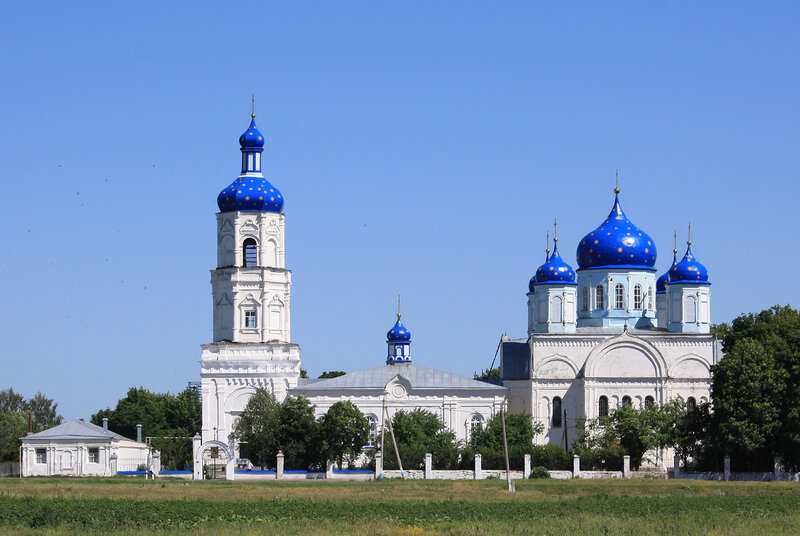
Внучке будет о чем рассказать своим друзьям из третьего "А", а у меня в памяти останутся новые впечатления о городе Борисоглебске как о сказочном граде Китеже:
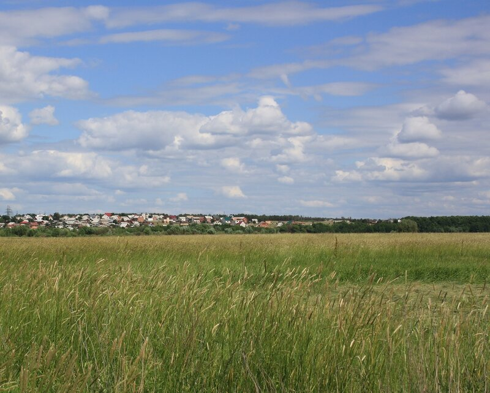